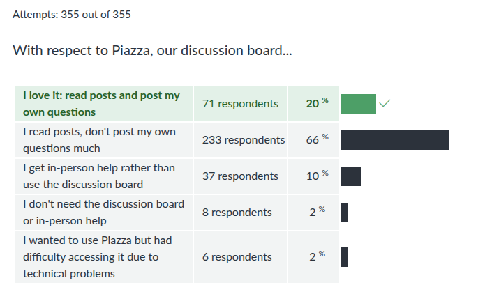
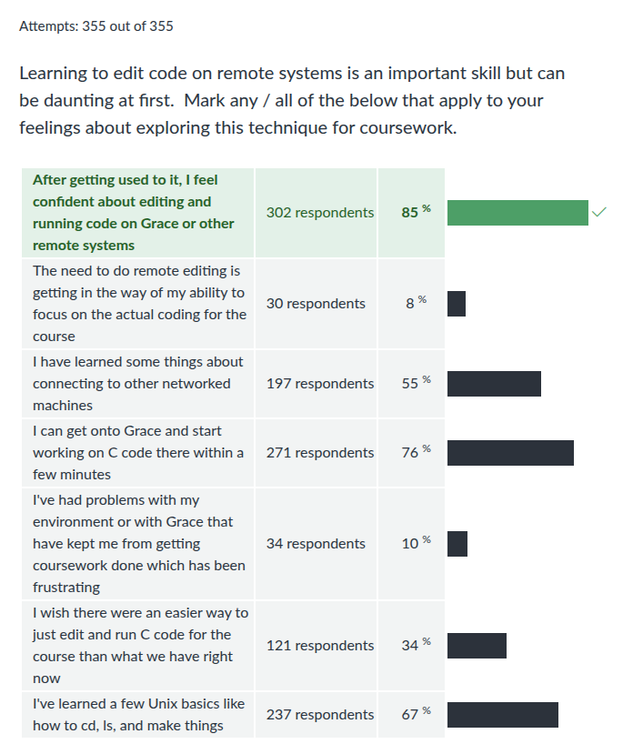
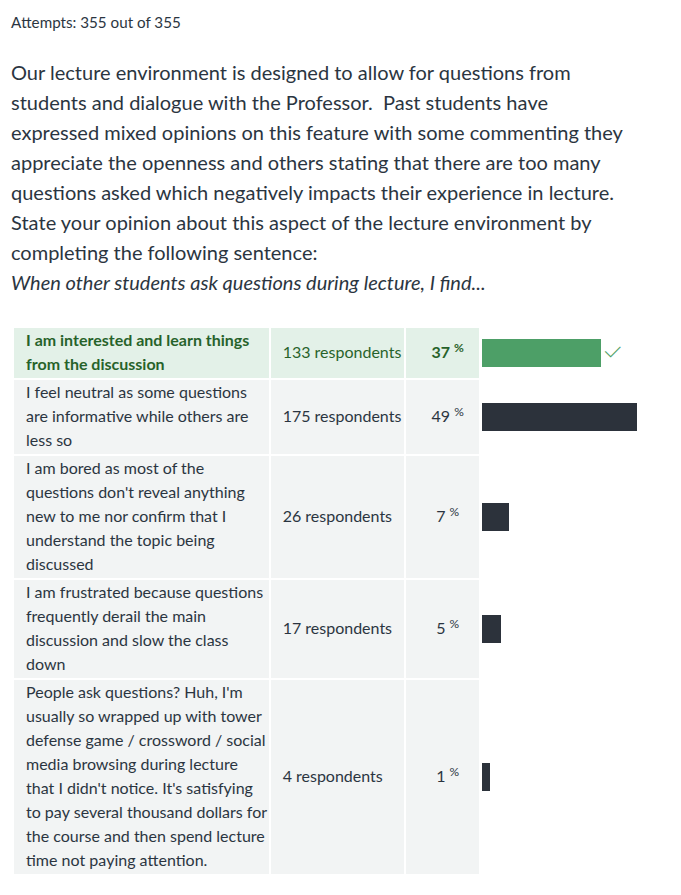

CMSC 216 F2024: Midterm Feedback Survey Results
Table of Contents
Summary Statistics for Multiple Choice Questions








Notable Comments + Responses
Instructor responses are in italics.
General Comments
- I feel I am doing well with understanding material but I constantly forget little things like the byte size of ints, chars, etc.
Practice makes perfect. Look it up, forget it, look it up, forget it, look it up… then you start to remember.
- I haven't needed to read the textbook yet, but I heard from TA's/upperclassmen that for the assembly portion I should really start.
- I find the textbook to be very dense and hard to read.
It's advisable to read but reading dense content is work: go slowly, take notes, re-read, absorb. Give yourself time to do so as generations of learners have before you.
- When I go to lectures I feel that I am able to understand the concepts, but when I start working on my own, I feel lost.
That's natural: when I go to a ballet, I think I can dance. It's only when you try for yourself do you find how much effort it takes to make those moves so fluid. Don't let that dissuade you: get lost then get unlost as I did for years. After a while, you'll be able to guide others like I do now.
- I just don't know how to approach this class even though we are more than a month in the course now, but it is taking me a lot of time to figure things out.
That probably means you're learning. We've got labs, HWs, projects, textbook readings, lecture slides and recordings, and office hours. Grab onto something, read, try ask for guidance from staff, and stay determined.
- I'm not sure under what circumstances it is appropriate to ask for help from Professor Kauffman vs. TAs (e.g. asking questions specific to class content vs. those that extend beyond the course material, help with projects, etc.).
Sorry for your confusion. You can ask me for help on coursework or general questions about computing and life. I believe that's true for TAs as well. Office hours are open for inquiry. I'm not sure what policies other course institute but I'd hope that most of your teachers are willing to talk freely about topics of interest.
- I'm really really trying hard to succeed, but it just feels like anything that I do isn't clicking. It feels like everyone else is ahead while i'm lagging behind. I don't know where i'm going wrong, but I felt that this was the only place I can really say that. Thanks for listening.
Perhaps you are the dead last person in the course right now in terms of understanding but that seems unlikely: the dead last person isn't concerned enough about this course to write thoughtfully about it as you have. As ever, my first advice is to stay determined: tenacity trumps talent in almost every setting and just refusing to give up will likely see you through the course. I'd also suggest coming to see me or another staff member you trust to get counsel. We can give you some perspective on whether you have truly have some deficits in understanding to surmount or instead are mis-perceiving that and can relax a bit. If we discover deficits, we can also give you guidance on efficient means to patch you gaps in understanding. You're paying a pretty penny for your education and guidance like this is part of the package.
- I know that the more time I spend on this course, the more I know. However, is there any benchmark about what should I must know and what is the more advance information?
That is the highest complement you can give a course: when I invest effort, I gain returns in improved understanding and applicable skills. Don't concern yourself overly about "benchmarks" aside from the usual (get reasonable scores on assignments). If you are curious about more advanced topics, come see me (Prof K) in office hours. Once I understand your interests, I can usually direct you towards sources on that will satisfy your curiosity.
- I find myself spending a lot of time just reading the directions, watching the videos, and just staring at the code to fully understand what I am supposed to do. After I feel like I fully understand what I have to do, actually writing the code is pretty easy.
I heard Rich Hickey (author of Clojure and a personal hero of mine) characterize this as "hammock-driven development", a jab at test-driven development, agile development, and myriad other modes that coders advocate for doing. Hickey's approach: think about what you actually need to do, think some more, read about it, understand the problem, feel it in your bones, AND THEN start coding. It tends to work better. You might poke a bit with code but only beginners sit down and start blurting program lines without a clear picture of how they'll fit together. Keep doing what you're doing because it sounds like the right approach, especially for you.
- I think a lot of students would appreciate posting certain things early, whether it be assignments, instructions, projects, etc. I don't think it should be expected that these things are posted early, but I also think doing so is strictly beneficial. For students who want to get ahead, they can look ahead (but maybe not submit until a certain date if its an assignment), and for students who just want to stay on track, they can simply follow the standard dates that go along with the lectures. For example, you could post some instructions or guides on the assembly language we will be using later in the semester early.
I've posted our course schedule along with the associated readings in our required textbook for the entire semester. Consider reading ahead if you are so inclined.
- Special thanks to the TA's for all your hard work and effort to help us succeed.
Amen.
- I have never really been challenged by a computer science class and this is the first one to put me out of my comfort zone, but that's how people learn so I appreciate that.
Amen.
Tech Setup
- I do wish it was easier to quickly run C code, perhaps locally, via some sort of super quick and light-weight set-up, like if I wanted to test some syntax or even use C in the future to test some math thing I come across. I know I can get this working with the skills I've learned in this class, but it kinda sucks that, in taking a C-programming course, I'm only really familiar running C code specifically via VSCode + UMD's Grace.
There are some ways. On Windows, try the Windows Subsystem for Linux (WSL). This will give an experience almost identical to Grace but local. On MacOS, I can turn you to some approaches involving Docker which will largely work but not as regularly. We've iterated several times with environment and the best approach we've come up with for (1) providing students a Linux environment, (2) making the setup short and easy, and (3) having a uniform approach for all students (Windows, Mac, Linux, Other) is the one we're on. From the graphs above it seems 90% of students are able to log manage with Grace with another 4% on other usable platforms. I'll call that a win on most days.
- I think something I am really struggling with is the commands on vs code. Potentially a cheat sheet or doc with the commands would be helpful
VS Code is the editor du jour: very popular now so there are tons of tutorials to read/watch on how to get better at using it as a tool. It's YOUR editor so learn how to use it or pick something else. Fair warning: I expect it will be unpopular in 10 years just as Atom, Eclipse, Netbeans, and many others have gotten unpopular over the years.
- for some reason I need to do source ~profk/bin/cmsc216-env on grace everytime in order to sucessfully run make test
Come see me in office hours and we'll sort this out: it'll be a nice introduction for you to shell initialization scripts.
- A more detailed overview of makefile and writing tests would be nice in case us students desired to write our own test cases for code
Makefiles will be discussed later in the course. They are a semi-core topic and students will write their own in one lab.
Test cases are quite another matter. I'll consider having an optional meeting if students are interested in learning to write their own tests. However, compared to Java/OCaml/Python/Others there is little uniformity on how C code tests are set up. We have a system that works for the course but is generally not used anywhere else. I find it hard to believe students know how to write test cases when most classes that "teach" writing tests simply require students to write them for projects but spend 0 time on HOW to write tests well. That stems from the fact that most teachers don't know how to write test cases in the first place. I'm not claiming I write particularly good tests but after spending 10 years writing tests for students in Java/OCaml/C/Python, I know what works in a classroom setting.
Discussion and Labs
- I like that discussion is optional as the few I have been to have been largely unhelpful due to TAs being unable to answer some of the questions I do have.
- I feel as though for me it is more useful and valuable to do the lab on my own with no help, and to attend discussion to reinforce my understanding of the material.
Keep ditching discussion then. Attendance to discussion is optional so as not penalize those who'd rather spend that time in a way that suits them better. The course staff aim for flexibility as different things work for different students.
- I like the format of labs right now, with the TAs walking us through some of the work then letting us independently do the rest while still being available for questions.
Keep attending discussion then. If the instruction from staff is of use to it, then attending is time well spent.
- I would prefer the first 15-20 minutes [of discussion] be a traditional review of lecture content, next 20-ish for the Lab, and the the rest of time is spent as the TA's view fit
TAs often comment that Monday discussion meetings often cover most of what's need to complete a lab leaving Wednesday a bit light. I'll pass on that this might be a good time to review some lecture content that is of interest.
- Struggling: …labs on things we haven't learned in lecture yet
Labs are meant to be done over the week and correspond to topics discussed in the lecture during that week or the preceding week. It's hard to get the timing of this exactly right and indeed, there are labs where topics pertinent to the lab introduced on Monday/Wednesday are discussed in more detail in Lecture on Tuesday/Thursday. To that end, it might be better if labs met Wed/Fri, but we play the hand we're dealt. Don't let the dissuade you: if parts of a lab are confusing, come to lecture prepared with questions. Then finish the lab later in the week when you have those doubts resolved.
Exam 1
- My one gripe is that I feel there should've been more practice materials to prepare for the midterm.
- I just wish there was more practice for the exams. I feel like I'm just sometimes lost as to what to learn.
I'm sorry that 8 lectures, 4 Labs + solutions, 4 HWs + solutions, a major project, and a practice exam with a review lecture were not enough preparatory material to guide you on what the exam will cover. Please feel free to share what you have in mind in its place and if it's in my power, I'll consider adding more. However, if these feeling stem from a belief that the exam is separate from the lectures, labs, HWs, and project were somehow separate from the exam, that once those assignments are completed they can be forgotten, then there is little I can do for you.
- We had a project due on Monday, but the midterm was that Thursday, so even though we had time to complete the project, it felt like we didn't have enough time to fully prepare for the exam.
Doing the project prepares you for the exam.
- The purpose of certain exam problems is questionable to me…. At the end of the day, I just wish you would carefully think of the problems you include in the exams and the purpose each one serves.
To take this feedback seriously, I'd need to discuss in detail what exactly the commented has in mind as "questionable": all the exam questions were carefully created to help staff to determine whether students have absorbed specific knowledge and skills and can act accordingly. If you'd like to discuss the purpose each question serves to do so, come see me in office hours and I'll explain.
- I also thought that the exam practice was way too easy compared to the exam…
- First midterm was similar to the practice exams handed out.
- Practice exam was different from the actual exam.
Opinions seem to vary on this but the practice exam represented the style, content, and difficulty level of the actual exam. The questions are different and the sentiment that practice exams are easier most frequently comes from the fact that there's no pressure and answers are freely given. Things always seem easier in those situations.
- While I think anything that can be logically extrapolated from content in lecture, projects or in the labs is fair game, some of the midterm questions like the null terminator character question were difficult to derive from what was taught in class. In that situation, students who have prior experience or more general domain knowledge had a significant leg up. In my opinion, exams in a course should test the ability of the student to understand and display knowledge of what has been taught in the course, not external knowledge of the subject.
I reject this assertion. We discussed string layout at length including null termination of strings. We discussed ASCII coding conventions and that bits can represent most anything so long as the coding scheme for how to interpret them is known. We discussed how arrays do not carry their length in C and that only strings use a sentinel value to terminate arrays. Students who paid attention had everything in hand they needed to solve that exam problem. Prior experience is always helpful in any endeavor but to conclude that the question unfairly tested "external knowledge" is a bad misunderstanding of how the course progressed.
Lecture
- I am struggling with the slides during lectures because there is so much information on one slide, and it's not very engaging to look at.
- I also want to take notes during lecture but I'm not sure what I should be taking notes on because everything is on the lecture slides. I feel like not being able to take good notes is also detrimental to my understanding.
When I started teaching, my slides were sparse and students complained that there was not enough information on them. Those students indicated that when they reviewed the slides, they didn't make any sense. That approach follows the principle that slides are meant as a presentation aid and are NOT a stand-alone artifact of much use.
I've adjusted my approach over the years and included more detail in slides as students largely want that detail in their review. A slicker approach would be to have separate Slides and Course Notes but I'm lazy and don't feel like maintaining two mostly overlapping documents.
If you don't like looking at the slides, then listen to me. Taking your own notes is a good idea; perhaps just try paraphrasing some of the material or constructing a code example which complements those provided.
- I think putting a bounty on questions has backfired a little bit, to the point where I can tell professor is a little nervous about getting through enough content each class. I feel as if we haven't covered very much content.
False. The course is progressing at a normal pace and we are pretty much exactly where we should be just as has happened a dozen times I've taught courses like this in the past. It is presumptive for a student to think otherwise. Student questions don't make me nervous but student arrogance does irritate me.
- I believe that students sitting closer to the front of the lecture hall often get chosen to answer questions far too often.
This was established from the beginning. See Syllabus Section 2.7 on Lectures and "Hot Seats".
- While I appreciate the encouragement to ask questions, sometimes I feel like it slows the class down by people asking very niche/redundant questions just to boost their engagement point score.
Niche questions are fine as long as they are on topic. When I detect attempts to "farm" engagement points, I shut them down. Generally, though, most folks ask relevant and well-intentioned questions from my perspective. I'm sorry that you don't share that feeling but such is the price of having a group of learners served by and individual teacher rather than a private tutor.
- We could cover so much more material if we simply limit the number of questions to 5 at a time.
Why 5? Why not 2 or 0? If you know the answers to all the questions, pat yourself on the head as its an affirmation that you're tracking well. If you don't know the answers, cultivate some curiosity as you might learn something. I limit questions when there is need but when we have time, questions are useful for affirmation and expansion.
Project 1
- I think the wording on some of the questions on the project can be a bit off. And make it more confusing then it needs to be.
Please feel free to offer suggestions for improvements. What was "a bit off" in the specification?
- I feel the projects are a lot more complex and harder to go through than what is said in lecture, I feel like I need to teach myself some things while working on the projects
Yes. Projects are harder than lecture examples. Lectures cover principles, labs narrow applications, and projects large-scale applications. You should learn some things along the way when implementing projects: that's the point.
- I am still slightly iffy on what constitutes a "necessary" comment or not on projects… I found it somewhat subjective, as comments I personally believed helped me understand the code (and would definitely help me understand the code if a future me were to come back and look at the code) were told to be unnecessary and, in fact, likely make me lose points.
Comments are like any human writing: their utility and necessity is highly dependent on the reader. The comments you'd write in this class are not those that you'd write in an industrial job and the comments you'd write in one job (front end Javascript dev) are quite different from another (Linux Kernel dev in C). The audiences are different with varying knowledge and expectations.
I'm sorry that you got dinged for "unnecessary" comments. In a learning setting like this, I advise staff to apply such penalties only for cases like
int x = 5; // assign 5 to xbut not much more. If you're still chaffed about losing the points, email me and I'll review the case to restore credit if it's merited.
- Project 1 was the most challenging CS project that I have completed at UMD. I wouldn't say that it's a problem, but I was caught off guard since it was unexpectedly much more tedious and time-consuming compared to CMSC132's projects.
- Project 1 caught me a little off guard because it's quite a bit longer than any project I had for CMSC 132.
- My final note, Project 1 was pretty simple compared to CMSC132 projects save for the difficulties in debugging C errors (thank god for Valgrind) but I figure it'll get trickier as we go along.
Opinions will vary based on past experience. But, if you learned something from working on project, my goal for it was accomplished.
- Not only did I not know C, but in Java I've never had to read a file before so I had to learn an entirely new skill in an entirely new language. By the time I got to part 3 I had a better grasp on C and was able to complete the rest of the project a lot faster.
It's generally expected that folks have worked with files previously as this is typical for a programming 1/2 sequence everywhere. If your experience lacked that important portion of programming, you were at a disadvantage BUT it sounds like you dug in, filled that deficit, and leveled up. Way to stay determined!
- The projects are very helpful but having smaller mini practice problems would help me understand the content better.
Um, Labs? HWs? Lecture Exercises?
- The project felt very long, I was very engaged for most of it, but there were definitely some parts that felt tedious and almost boring compared to other projects I've worked no
- I thought project 1 was extremely redundant and long for no reason. I learned a lot while doing the project but a lot of it was repetitive and made it take longer that it really needed to.
- I understand why project 1 was structured as it was, but that didn't change how incredibly annoying it was to program a BFS algorithm which was split up into dozens of separate functions which all had to call each other.
- maybe make the projects more concise, too much for one project.
Interesting takes. If you have concrete suggestions on how to structure the code required for Project 1 so that the it solves the same problem and requires implementers to demonstrate the same techniques, by all means share. I don't enjoy redundancies any more than the next person and would prefer not to thrust them on students. I'm happy to discuss this in office hours.
If, however, after some thought you can't come up with a way to tighten up the project because all the elements you thought were "boring" and "redundant" turned out to be necessary, then you you'll be where I was when I designed the project.
I've yet to have a student whose leveled such judgments come up with major improvements to projects. Mostly it's folks who may have written some of their own programs but never had to describe a project that hundreds of others will implement and provide support for them through test cases, documentation, and in-person help. When you've done that for a few years, I'll take your criticism to heart. Until then, such commentary lacks the nuance needed to sway me and screams of inexperience about how even simple things takes a lot of code.
- Throughout the project, it also felt like I was writing arbitrary functions without knowing how they all connected together. Even after having completed the entire project and finishing all test cases, I wouldn't be able to trace out what functions call each other by memory, as I usually can for other projects.
This is a concern. It is true that the project had a strong outline of what is to be done so students were not required to "design" anything. This is for two reasons: (1) keeping the whole class together is helpful for testing and staff assistance AND (2) generally students are not mature enough to design such a project "well" and should still be exposed to reasonable examples of design by others.
That said, you've identified a gap in your understanding: how do the pieces of the project fit together. While we are beyond project 1, I recommend that you spend some time contemplating how the pieces fit together. You might try designing your own version of the program from scratch: abandon my design except for the file format and write code to just solve the problem. This is actually easier as you're not concerned about decomposing the project into digestible chunks for students new to C. I imagine the design will include all the same pieces with fewer functions that can be individually tested. By comparing your own completed design to mine, you'll gain insight into how the project works and why I subdivided in the way presented.
Understanding how the pieces of this and other projects fit together is an important part of designing programs. When you get into the wild, you'll rarely design things from scratch but rather be thrust into an existing, often gargantuan, code base and spend much of your job getting acquainted with how things fit together. Practicing that now is a great way to get a leg up.
- [On Project 1] I started late and don't regret it!